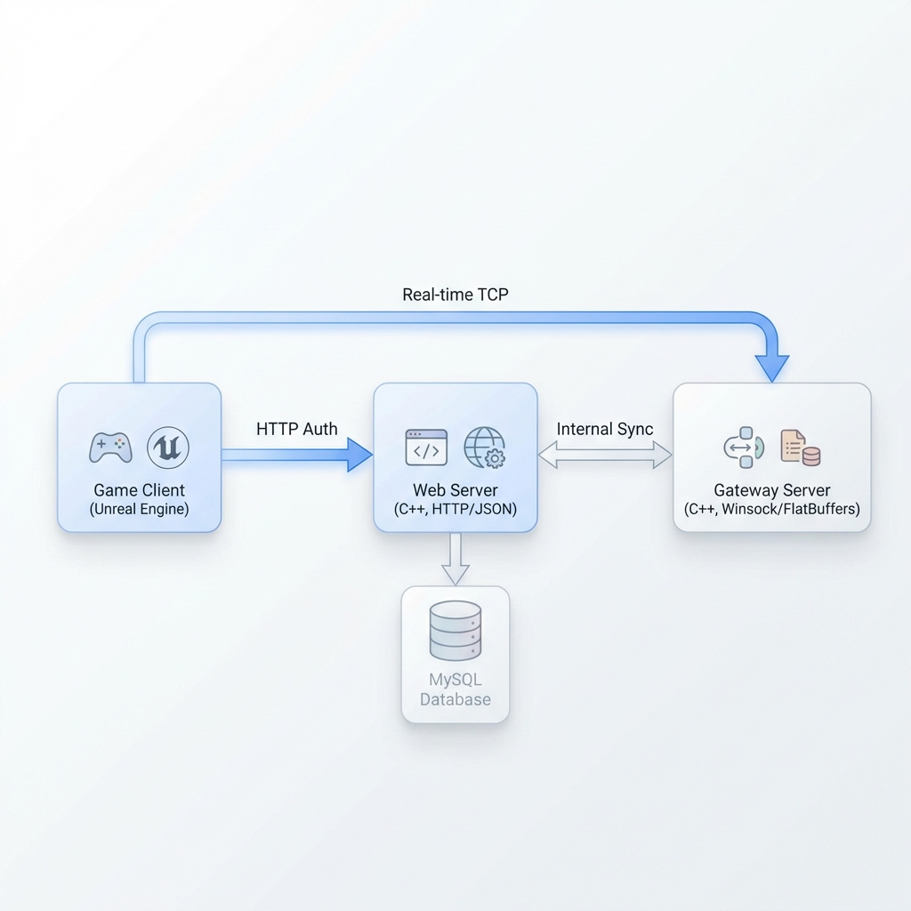

안녕하세요. 지원자 원유찬입니다.
Junior Game Programmer
About Me
어떤 개발자가 되고 싶으신가요?
게임을 좋아하게 된 특별한 계기가 있나요?
게임 개발자로서의 비전과 포부를 들려주세요.
Skills
- C++
- Socket Programming
(Winsock) - Unreal Engine
- Database
(MySQL)
Projects
| 프로젝트명 | Megabonky | ||
|---|---|---|---|
| 이미지(GIF) |

|
||
| 프로젝트 개요 |
서버-클라이언트 구조에 대한 깊은 이해를 목표로 진행한 1인 개발 프로젝트입니다. 온라인 멀티플레이 환경에서 데이터 동기화를 최우선 과제로 삼아 개발했습니다. |
||
| 작업 인원 | 1인 개발 | 기간 | 2025.12 ~ 2026.02 |
| 주요 기능 |
• GAS를 활용한 캐릭터 능력, 무기 시스템 • Winsock을 기반으로 Flatbuffers를 활용한 패킷 직렬화, 웹서버-게임서버 통신 • DB를 통한 유저 랭킹 및 데이터 관리 |
||
| YouTube | 프로젝트 영상 보기 | ||
Technical Implementation
Gameplay Ability System
- 객체별 Attribute 분리 설계:
캐릭터, 무기(액터), 몬스터별 Attribute를 독립적으로 관리하는 구조로 설계했습니다. - 데미지 계산:
ExecutionCalculationClass를 사용하여 캐릭터 스탯과 무기 성능이 결합된 데미지 공식을 구현했습니다. - 서버 중심 어빌리티 제어:
캐릭터 보유 무기의 어빌리티를 서버 타이머로 주기적 활성화(Activate)하여 멀티플레이 동기화를 보장합니다. - 무기 강화 시스템:
GameplayEffect를 사용하여 실시간으로 무기 Attribute를 조정하는 강화 로직을 구축했습니다.
동적 난이도 조절 및 데이터 기반 시스템
- 로그 곡선 기반 몬스터 스폰:
게임 시간에 따라 몬스터 스폰 마릿수를 조절하여, 난이도 조절을 했습니다. - 가변적 몬스터 스케일링:
CurveTable을 참조하여 시간에 따라 몬스터의 HP와 ATK가 강화되도록 설계했습니다. - 데이터 테이블 기반 무기 업그레이드 시스템:
데이터 테이블을 활용한 무기 뽑기 및 강화 시스템을 구현했습니다.
서버 구조 및 데이터 영속성
부하 분산과 효율적인 통신을 위해 프로세스 분리형 아키텍처를 채택했습니다.
- 분산 서버 구조(Role-based):
Web Server(유저 인증/DB)와 Gateway Server(실시간 세션)를 분리하여 운영 효율을 높였습니다. - FlatBuffers 패킷 직렬화:
Winsock 기반 TCP 통신 시 바이너리 포맷을 적용하여 JSON 대비 패킷 크기 감소 및 처리 속도를 개선했습니다. - 데이터 영속성 보장:
로컬 파일 저장 후 DB 동기화 방식을 통해 유저의 게임 기록 및 무기 해금 데이터를 안정적으로 관리합니다.
서버 통신 구조도 (Architecture)

지형 적응형 AI 및 목표 시스템
- 레이트레이싱 기반 이동 로직:
실시간 레이트레이싱을 통해 전방 장애물을 감지하고 환경에 맞춰 타고 올라가는 능동적 이동을 구현했습니다. - 업적 기반 해금 시스템:
누적 몬스터 처치 수에 따라 캐릭터 및 무기를 해금하는 게임 루프를 완성했습니다.
Contact
Email: wonyu1997@naver.com
Phone: 010-6429-8488
GitHub: github.com/Veduy